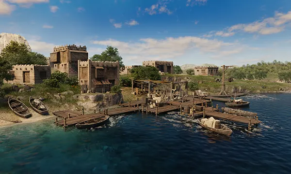

Niiza Port
Open in the wiki →Town/port. A port town in the northernmost part of Dagda. It has dealings with Brigid
- Type
- town/port
- Connects to
- Niiza Gate, Cartodo Posthouse, Mahdel's Shrine, Yashiro Fort, Urkulu Stronghold, Howling Gorge